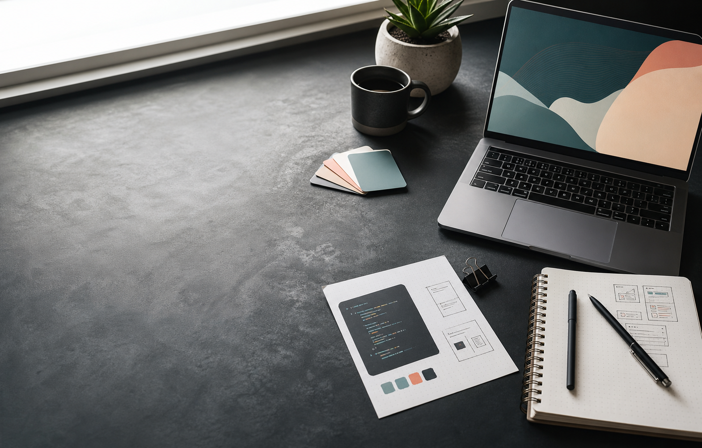

HTML5 Game
Barry's Biscuit Burglary
A browser game about Barry, a tired old man pushed into action by the rising price of biscuits. Built with Godot.
View project
Portfolio
I create playable web games and digital projects with a focus on clear ideas, responsive controls, and memorable mechanics.
Game development, playable prototypes, creative coding, and web publishing.
Building projects for the web and sharing them through itch.io and GitHub Pages.
Godot, HTML5 games, web portfolios, and practical frontend foundations.
Selected Work
HTML5 Game
A browser game about Barry, a tired old man pushed into action by the rising price of biscuits. Built with Godot.
View projectShooter
A 2D bullet hell shooter made for Bullet Hell Jam 6, developed with OceanSans and released as a downloadable game.
View projectProfile
A growing collection of games, prototypes, and playable experiments published on itch.io.
View profileAbout
I am Edward Amann, a digital maker and game developer creating small, playable projects for the web. My work includes browser games, downloadable prototypes, and collaborative jam projects.
This portfolio collects my games and gives each project a clean place to live alongside my GitHub Pages site.
Contact